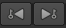

There are many useful tools at the top of the Viewer, some of which allow you to select channels, adjust gain and gamma, and zoom and scale down the image in the Viewer.
For more information about the tools above the Viewer, see Timeline Viewer Tools.
The tools at the bottom of the Viewer allow you to adjust the playback settings, including setting the frame range, selecting the playback mode, and locking the Viewer playback range.
Drag the orange marker along the timeline to quickly cue to a specific frame or timecode. The number of the current frame or timecode appears below the center of the timeline. You can also cue to a frame or timecode by typing its number directly into this field.
TIP: The current frame and in an out point fields accept simple mathematical functions, such as +/-20 to jump forward or backward 20 frames or +/-00002000 to jump forward or backward 20 seconds.

By default, Nuke Studio automatically adjusts the timeline of every Viewer window to show the frame range defined in your Project Settings. If no frame range is defined, the frame range of the first image you read in is used as the global frame range.
Viewer timeline controls also have a frame range source dropdown menu that you can use to define where the timeline gets its frame range from. You can set this menu to Global, Input, or Custom. Global is the default setting described above.
The playback rate field (frames-per-second) initially displays the project’s playback speed. Nuke Studio attempts to maintain this speed throughout playback, although this adjusts depending on the resolution of the imagery and your hardware configuration.
NOTE: The asterisk (*) denotes the Sequence playback speed selected using the Frame Rate dropdown or, for new projects, the Project Settings > Sequence > Frame Rate dropdown.
In and Out markers enable you to alter the duration of a clip to just the portions of the source that you require.
When a clip containing In and Out points is added to a timeline, you can slip the clip around the markers to adjust the clip’s output. See Timeline Editing Tools for more information.
You can also use In and Out points to export certain portions of a clip or sequence. See Transcoding for more information.
To set In and Out markers:
| 1. | Right-click on the required clip or sequence and select Open In > Timeline View. |
Clips opened in a timeline have a purple background in the timeline.
| 2. | Move the playhead to the location of the In point and press I on your keyboard. |
The In point is marked by the In tab and the time is recorded in the playback controls.
| 3. | Move the playhead to the location of the Out point and press O on your keyboard. |
The Out point is marked by the Out tab and the time is recorded in the playback controls.
NOTE: You can also set markers by navigating to View > Mark In or Mark Out, by using the Timeline menu to Mark Selection or Mark Clip dependent on clip selections on the timeline, or by right-clicking a clip instances and selecting Open In > Viewer.
Click and drag the markers to adjust their position, or hold Ctrl/Cmd to move both markers at once, retaining their relative positions. A Viewer preview shows the current frame for the selected marker(s) and a timecode/frame popup helps to set the new position.

Clear the markers from your clip by navigating to Viewer > ClearIn Point (Alt+I) and Clear OutPoint (Alt+O). The markers are removed completely, but you can reapply them by repositioning the playhead and pressing I or O.
TIP: You can also press Alt+U to remove both markers at once.
When the playhead is positioned near In and Out markers, the top half of the timecode scale controls the playhead and bottom half controls the markers.
The playback rate field (frames-per-second) initially displays the project’s playback speed. The Viewer attempts to maintain this speed throughout playback, although this adjusts depending on the resolution of the imagery and your hardware configuration.
The following table lists the functions of the playback buttons:
|
Buttons |
Functions |
|
|
The Play backward and Play forward buttons play the sequence backward or forward at the script’s frame rate. When you press a play buttons, it toggles to a stop a button. |
|
|
The Back 1 Frame and Forward 1 Frame buttons cue the sequence to the previous or next frame. |
|
 |
The Previous keyframe and Next keyframe buttons cue the sequence to the script’s previous or next keyframe. |
|
|
The First frame and Last frame buttons cue the sequence to the first and last frame. |
|
|
The Frame Increment field allow you to specify the number of frames by which the Previous increment/Next increment buttons cue the sequence. This is set to 10 frames by default. |
The J, K, and L keyboard shortcuts also control playback. The K keyboard shortcut is mapped to Pause/Play. J and L are mapped to backward and forward. Combinations are also supported:
• K+J - frame backward.
• K+L - frame forward.
• K+drag in the top third of the Viewer - standard jog controls. Dragging the cursor left and right moves the playhead backward and forward, frame-by-frame.
• The jog controls also detect rotary motion to jog through frames. Clockwise motion in the top third of the Viewer, while holding K, advances the playhead and anti-clockwise reverses the playhead.
• K+drag in the middle third of the Viewer - standard shuttle controls. Dragging the cursor left and right plays backward and forward, with increased frame rate toward the edges of the Viewer.
• K+drag in the bottom third of the Viewer - skips the playhead to absolute timeline position.

The Playback Mode button lets you control how many times and in what direction the Viewer plays back the sequence. Click the button to toggle between the following modes:
|
Button |
Function |
|
|
Repeatedly plays the sequence in a loop. |
|
|
Repeatedly plays the image back and forth from head to tail. |
|
|
Plays once through the section between in and out point and stops at the out point. If these are not marked, then it plays from the beginning to the end of the sequence. |
|
|
Plays once from the beginning to the end of the sequence, ignoring any in and out points. |
|
|